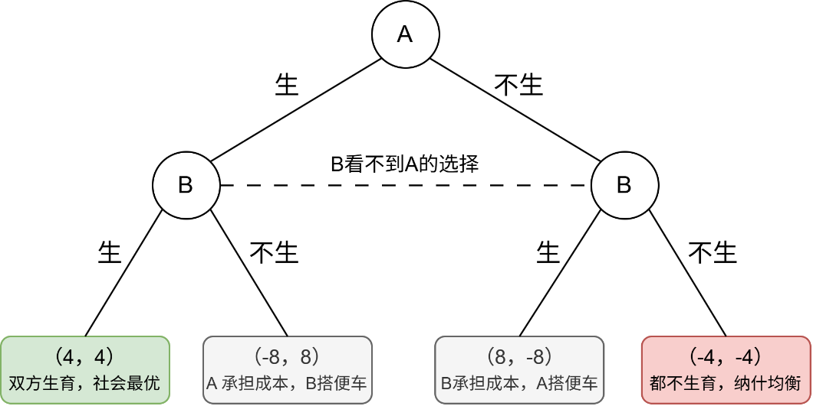

《少子化的囚徒困境》
个人的理性选择，社会的错误未来
生育，是个人选择。
对一个家庭而言，选择不生育，可以减少养育成本，拥有更多时间和资源投入自身发展。选择生育，意味着家庭需要承担长期的时间、经济与精力投入。
但生育的特殊之处在于：家庭承担了养育过程中的大部分成本，而孩子成年后创造的劳动、税收、消费和社会价值，却会超越家庭边界，由整个社会共同享有。
于是，生育形成了一种特殊的不对称：
生育的成本，主要由家庭承担；人口延续的收益，却由整个社会共享。
当这种成本与收益无法匹配时，生育选择可能逐渐演变为一种类似“囚徒困境”的局面。
理性的选择
假设有两个家庭 A 和 B，他们都面临两个选择：生育，或者不生育。
下图展示了双方不同选择组合下的结果。

从博弈结果来看：
当 A 选择生育时：
- B 选择生育，收益为 4；
- B 选择不生育，收益为 8。
原因在于：
- 如果 B 不生育，他可以避免承担养育成本，同时仍然能够享受到 A 的孩子未来创造的部分社会收益。
- 因此，对于 B 这个理性的个体而言，不生育似乎是更优选择。
当 A 选择不生育时：
- B 选择生育，收益为 -8；
- B 选择不生育，收益为 -4。
即使整个社会已经进入低生育状态，B 仍然会发现：相比承担养育成本，不生育带来的损失更小。
因此，无论 A 如何选择，B 都倾向于选择不生育。
A 面临同样的激励。
最终，双方都会走向：（-4，-4）。
也就是：双方都选择不生育，形成纳什均衡。
错误的未来
然而，问题在于：
在这个模型中，双方“不生育”的结果，并不是最优结果。
如果双方都选择生育：（4，4）
那么两个家庭都能获得更高收益，同时整个社会也能够从人口延续中获得更大的长期利益。
但现实中的困境在于：
对于单个家庭而言，不生育可能是一个理性的选择；
可是，当越来越多家庭同时作出同样的选择时，整个社会可能走向另一个方向：
- 未来劳动者不断减少；
- 消费市场持续收缩；
- 养老与社会保障压力增加；
- 代际接续能力逐渐下降。
最终：
每个家庭都在追求自己的最优解，却可能共同走向一个更差的未来。
这正是少子化可能形成的“囚徒困境”。
《博士与母亲》
故事的起点
S国，两个同为35岁的年轻人：
- 青年 A：名校博士，尖端工程师，享有体面薪酬与社会声望。专注学业与事业，主张“少生优生”，计划至多要 1 个孩子。
- 青年 B：普通技校毕业，早早步入婚姻，35岁时已是 5 个孩子的母亲。
彼时的共识
在当时的社会共识中：
- A 是社会的顶梁柱：代表先进生产力，为国家缴纳丰厚税收，推动技术进步，实现了完美的个人价值；
- B 是被惋惜的掉队者：过早放弃自我提升，陷入家务与育儿的琐碎泥潭，被视为不值得效仿的例子。
历史的转向
三十年后，S 国每年出生人口减少了60%，劳动力出现真空，评价体系整体逆转：
- A的处境：国家调整税制，多子女家庭减免税负，A 这样的少子女家庭，相对要多交税。在公共住房、大宗消费品配给中，少子家庭也排在后面，生活成本明显上升。
- B的处境：此时已是 8 个孩子的母亲，被授予“英雄母亲”勋章，享受国家津贴、全额免税以及大户型住房优先配给权。
时间的账本
三十年里，两个人做的事几乎没变。A 一直在从事高端工作，B 一直在抚养孩子。但社会已然改变。
-
即期产出 vs. 远期底座
A 生产的是“当下的技术与税收”，而 B 生产的是“未来运转的基石”。A 的科研工作成果固然卓越，但若是三十年后没有足够的新生劳动力去维护电网、操作产线、运转医院，没有足够的新生消费者去激活内需、消化产能、承接资产，A 所积累的全部财富与技术，都将在物理层面迅速沦为废墟。
-
代际之间的跨期结算
A 缴的税，支撑着 B 的孩子上学。B 的孩子，三十年后会成为医生、护工和纳税人，支撑 A 的晚年。两人互相依赖，只是账期不同：A 的付出在今天，B 的付出在三十年后。
-
社会评价的盲区
当一个社会把赞美、资源和晋升通道都给了“即期创造价值”的人，却把养育下一代看成纯粹的家庭私事，它实际上是在鼓励所有人把成本推给未来。
对整个社会来说，A 与 B 都不可或缺
但没有 B 承担的“人口再生产”，A 创造的辉煌甚至连一个世代都无法维系
《2060年的五百万》
500万元的晚年
小明勤奋工作，认真储蓄，一生都在为自己的晚年做准备。
他选择不生育子女，或者只生育很少的子女。
年轻时，小明相信一个再简单不过的道理：财富是未来的保障。
于是，他省下每一笔钱，规划每一步未来，购买保险，缴纳养老保障。
75岁这一天，小明拥有500万元现金，以及一套已经还清贷款的住房。他终于可以停下来了。不用再为工作奔波，不用再为房贷焦虑。
他想象中的晚年，是安稳而体面的：清晨去公园散步；生病时能够得到治疗；行动不便时，可以请护理人员照顾；家里的水管、灯泡出了问题，也有人可以上门维修。
他以为，自己已经为晚年准备好了足够的财富。
但他没有想到：2060年，养老的逻辑，已经改变。
届时，由于社会长期处于较低的生育水平，65岁及以上老年人口占总人口比重将超过四成。需要照料的人越来越多，而能够提供照料的人却越来越少。
当照料一位老人的成本不断提高，小明攒下的500万元，还能够支撑他的晚年生活吗？
要回答这个问题，首先要弄清楚：小明积累了一辈子的500万元，到底是什么？
钱不是养老本身，只是养老的凭证
钱不能替小明看病，不能替他送药、做饭、修理房屋，也不能替他完成各种生活服务。
他真正需要的，是医生、护士、护理员、厨师、维修工、快递员，以及无数仍然在工作的劳动者。
钱，本质上只是一种凭证。
它代表小明过去创造的价值，也代表他未来可以向社会交换商品和服务的权利。
但凭证本身并不产生价值。
它能够兑换多少东西，最终取决于另一端：未来还有多少人在生产，还有多少人在提供服务。
因此，养老真正的约束，从来不只是账户上的数字。而是：当小明老去的时候，社会上还有多少年轻人在创造财富。
第一关：服务端——越来越多的老人，争夺越来越少的劳动者
75岁以后，小明需要的并不是某一种商品。
他需要的是一整套庞大的服务体系：医疗、护理、陪伴、送餐、维修、交通，以及日常生活中的各种帮助。
而这些行业有一个共同特点：高度依赖人。
当老人越来越多，年轻人越来越少，越来越多像小明一样的老人，会拿着自己的“财富凭证”，去购买越来越稀缺的劳动服务。
结果必然是：服务越来越贵。
小明账户上的500万元，仍然是500万元。
但它能够购买的护理时间、医疗服务和生活照料，将会大幅减少。
第二关：资产端——越来越多的人想出售，越来越少的人愿意接手
小明想到：如果现金不够，还有房子。
可是，房子的价值，最终也取决于未来有没有足够多的人愿意购买。
2060年，庞大的老年群体可能同时面对同一个选择：出售资产，换取资金。
然而，另一端的年轻购买者，却远少于今天。
当出售的人越来越多，而接手的人越来越少，资产价格必然下跌。
房产不会因为过去的繁荣而永远保值，其价值最终仍取决于未来的人口结构。
第三关：兑付端——所有承诺，都需要未来的年轻一代兑现
小明还有最后一道保障：养老金、保险、基金，以及各种长期金融安排。
这些都是写在合同上的承诺，看起来十分可靠。
但任何承诺，最终都需要兑付。
而兑付它们的基础，仍然是未来社会的劳动、收入和产出。
但是，当社会中缴费的人减少、领取的人增加，生产的人减少、被供养的人增加时，小明账户上的数字或许并未发生变化。
但数字背后的购买力和兑现能力，已经改变。
财富幻觉与人口真相
小明想知道：
2060年的500万元，到底还值多少钱？
但更深层的问题是：
2060年的世界，还有没有足够多的年轻人，去生产这500万元原本能够购买的东西？
对于小明这类无子女或子女较少的群体而言，这一问题尤为突出。家庭可提供的养老支持不断弱化，其对社会化养老的依赖程度随之上升。
但在长期低生育率的社会环境下，需要照护的人群持续增长，能够提供照护服务的人力却不断缩减。
这就是低生育带来的长期挑战。
小明最终明白：真正稀缺的从来不是账面上的财富。因为货币可以增加，资产可以重新定价，数字也可以留在账户里。
真正稀缺的，是人。
更准确地说，是年轻人。
本文发布时间
2026年10月11日